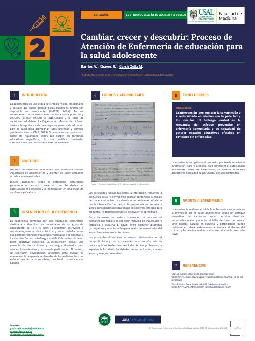

Abrir PDFCambiar, crecer y descubrir: Proceso de Atención de Enfermería de educación para la salud adolescente
La adolescencia constituye una etapa de profundas transformaciones físicas, emocionales y sociales que influyen directamente en la construcción de la identidad y en las relaciones interpersonales, haciendo indispensable contar con espacios de educación para la salud que promuevan el autocuidado. Con el propósito de responder a estas dinámicas, se llevó a cabo una valoración de enfermería comunitaria a un grupo de adolescentes de 12 y 13 años, integrando observación institucional, entrevistas a autoridades y consultas anónimas acerca de sus inquietudes sobre pubertad y vínculos. A partir de los diagnósticos obtenidos, se diseñó e implementó una jornada educativa que combinó una síntesis teórica con dinámicas lúdicas participativas. Este abordaje permitió romper la vergüenza inicial, generar un clima de confianza ético y confidencial, y facilitar la apropiación de conceptos clave. Las devoluciones anónimas del alumnado valoraron el respeto, la claridad de los contenidos y la cercanía del equipo de salud. Si bien la escasez de tiempo limitó la profundización de ciertos temas y el acompañamiento individual de quienes mostraron mayores dudas, la experiencia fortaleció las habilidades del equipo en manejo grupal, escucha activa y comunicación pedagógica. En conclusión, la intervención demostró la efectividad del enfoque preventivo de la enfermería comunitaria para fortalecer la autonomía y la expresión en contextos educativos no clínicos.